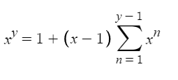
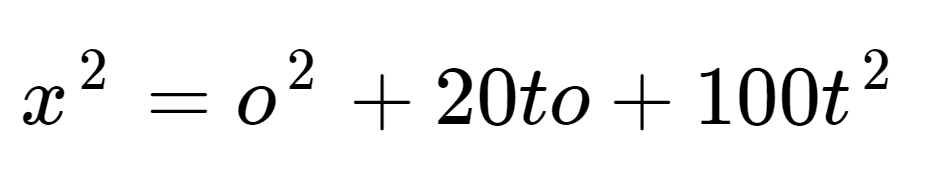
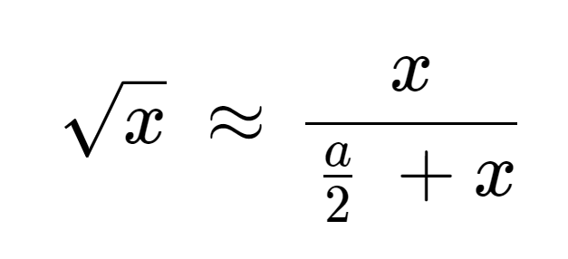
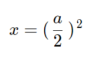

formulas i've found:

This works no matter how you solve it but multiplying (x-1) as a binomial by the summation results in
something like (in the case of x = 3 and y = 4) 3^4 = 3^4 - 3^3 + 3^3 - 3^2 + 3^2 - 3^1 + 3^1 which cancels to
3^4 =
3^4.
Solving for (x-1) first and then solving for the rest gives the same value but doesn't result in an
identity.
In the case of
x = 3 and y = 4, 3^4 = 3+2(3^3+3^2+3^1), which is also correct.
that one has already been found and is very similar to binary. 111 = 1*2^2+1*2^1+1*2^0, 1000 =
1*2^3+0*2^2+0*2^1+0*2^0 = 2^3,
so 2^3 = 1*2^2+1*2^1+1*2^0 + 1. The same thing applies to other bases, where base = x in x^y. 5^3 is 1000 in
base 5,
aka 444+1,
aka 4*5^2+4*5^1+4*5^0+1, which is correct.
This one is just (10t+o)^2, but it still works as a shortcut for squaring numbers (more steps but easier numbers). t
= tens place x and o = ones place of x.

Variable a can be any positive value. Changing the value of a changes how accurate it is and how quickly its
accuracy decreases.

For every value of a, the equation will never return a correct result until
